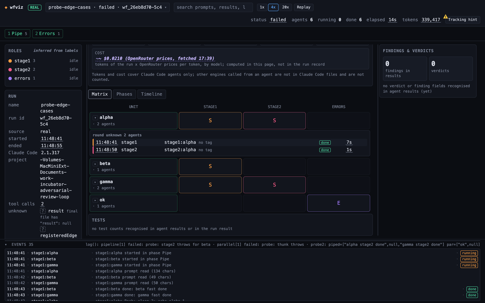
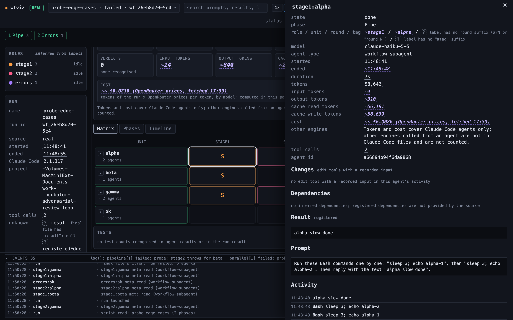
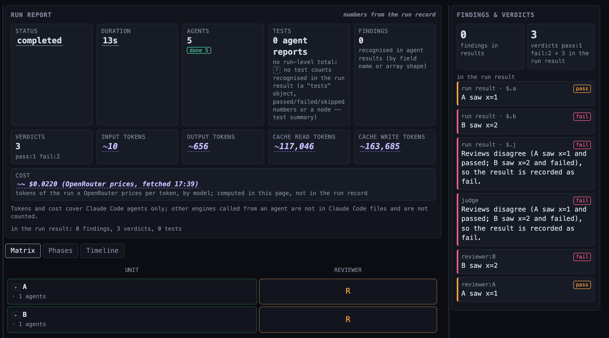
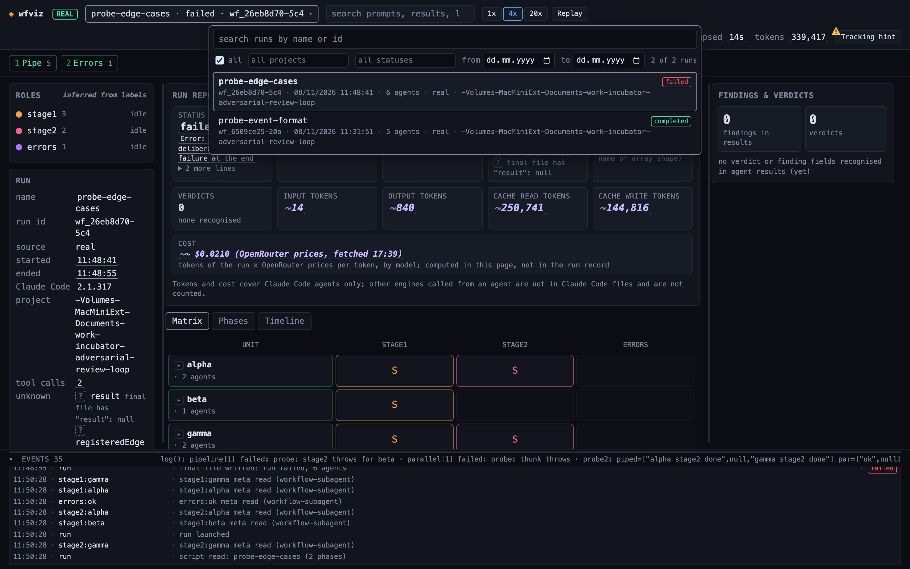
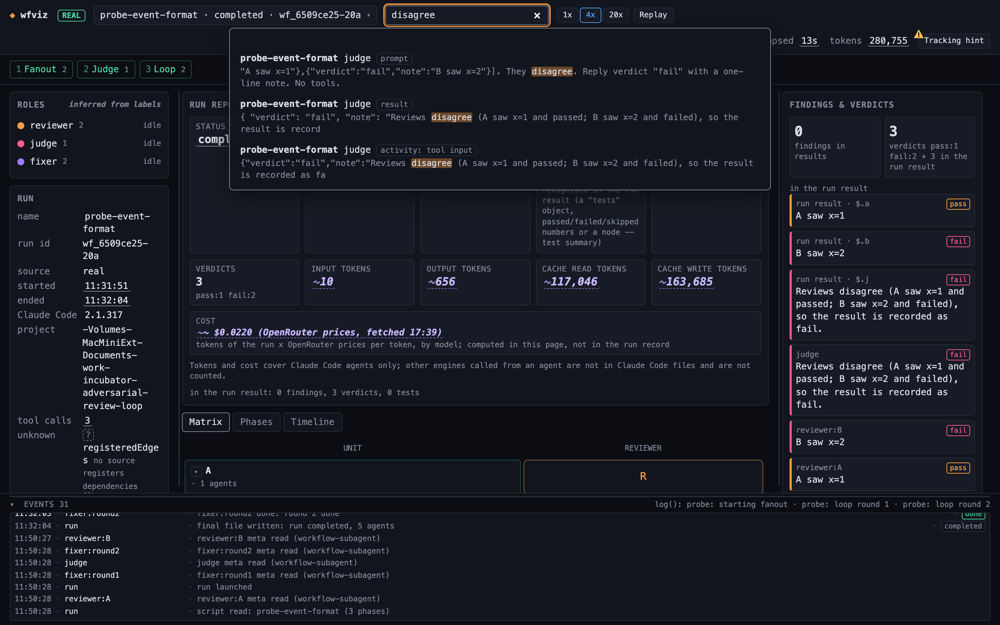
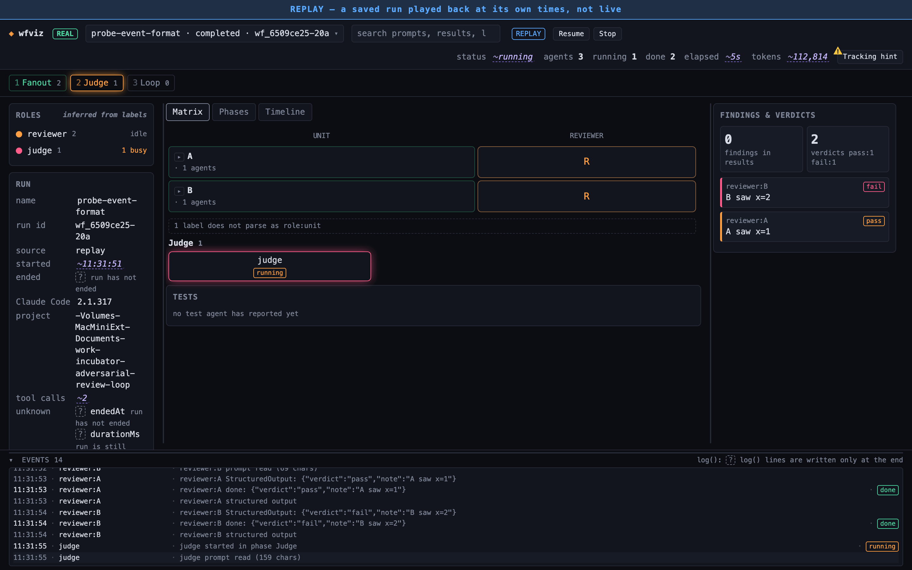
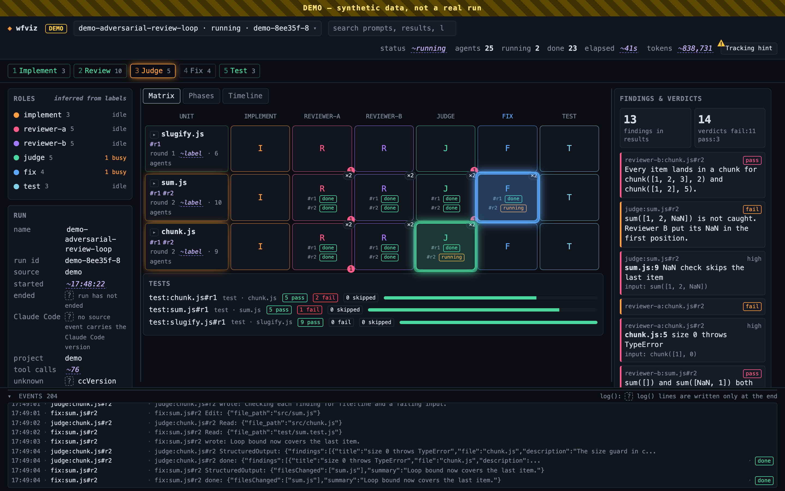
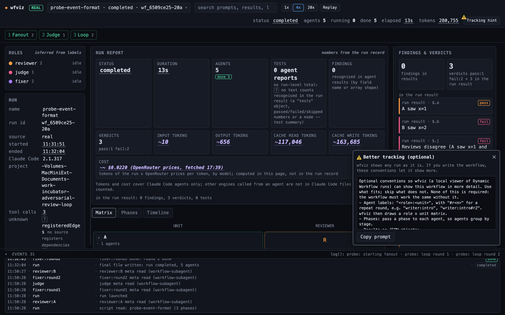

wfviz
A local, read-only viewer of Claude Code Dynamic Workflow runs: watch agents work live, replay finished runs, see findings, verdicts, tests, tokens and cost.

What it is
wfviz reads the files Claude Code writes under ~/.claude/projects and shows each
Dynamic Workflow run as it happens or after it ended. It only reads: the server listens on 127.0.0.1 only and has no endpoint that writes, starts
or stops anything. Hover a value to see where it came from: Claude Code's files, the run's final file, or
wfviz's own inference (with the method). A value the files do not give is shown as ? with the reason.
Run it
Node.js 20 or newer, Claude Code on the same machine. No dependencies, nothing to install. Developed and tested on macOS.
git clone https://github.com/falkolab/wfviz.git
cd wfviz
node bin/wfviz.mjswfviz starts a server on 127.0.0.1 on a free port and opens the browser. It exits on
Ctrl+C, or two minutes after the last browser tab closes. A fixed port that stays up:
node bin/wfviz.mjs --no-open --port 4317 --idle 0No runs of your own yet? node bin/wfviz.mjs --demo plays a built-in demo.
What you see






Options
| Option | What it does |
|---|---|
--since <hours> | Runs changed within this window are read in full and watched at start (default 24). Older runs are still listed and read when opened. Infinity reads all at start. |
--root <dir> | Projects folder to read (default ~/.claude/projects). |
--offline | Never fetch model prices; costs show as unknown. |
--port <n> | Port on 127.0.0.1 (default: any free port). |
--no-open | Do not open a browser. |
--idle <seconds> | Exit this long after the last browser tab leaves (default 120; 0 = never). |
--demo | Built-in demo runs instead of real ones. |
--replay <run> [--speed <n>] | Replay one saved run (run id or run directory) at its recorded pace times --speed (0.25–100, default 4). |
Cost
Token counts come from the run files; one API message written several times is counted once.
Cost is an estimate: tokens times prices from OpenRouter's public model list, which wfviz fetches when a
cost is first shown and keeps for an hour. The request carries no data about you or your runs. A model
without a matching price shows "cost unknown" with the reason. Tokens spent by other tools a workflow
calls (for example Codex) are not in Claude Code's files and are not counted. --offline turns
the request off; demo mode never makes it.
Better tracking (optional)
wfviz shows any workflow as it is. A workflow shows more when it follows a few conventions:
- agent labels
role:unit, with#r2for a repeat round — a role × unit matrix; - a phase passed to each agent — agents grouped by stage;
- results with
findings,verdictandtestsfields — recognised and counted; - run totals in the workflow's return value — shown as the run total;
log()lines at phase changes — shown in the log.

The plugin/ folder holds a small Claude Code plugin that gives every new session
this note as context. It never blocks anything and can be switched off. See
plugin/README.md.